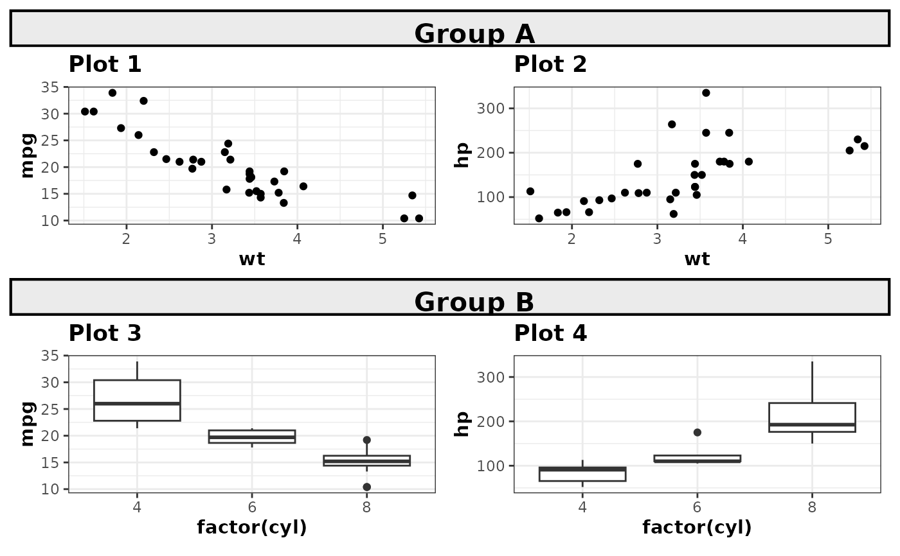
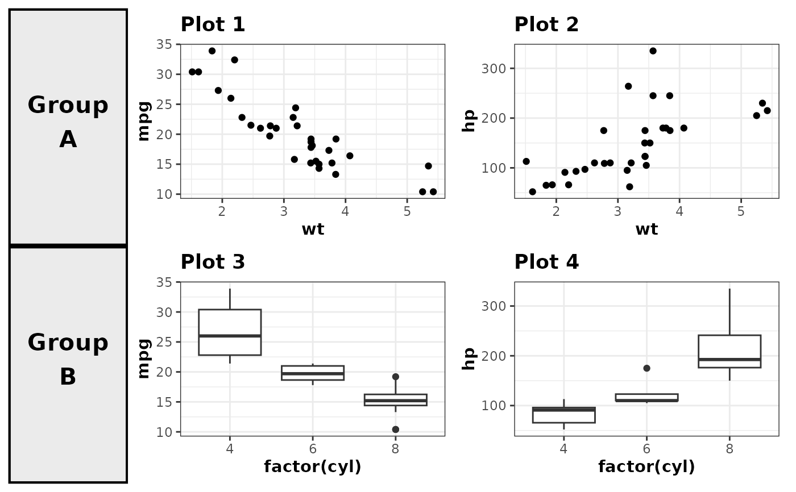

Creates a plot with a centered text label designed to be used as a row title in a multi-row patchwork composition. The plot has a minimal theme with a customizable background and bold text.
Usage
patchwork_rowtitle(
label,
x = 0.5,
y = 0.5,
size = 5.5,
hjust = 0.5,
vjust = 0.5,
fill = "grey92",
color = "black",
linewidth = 1.5,
margin_top = 6,
margin_right = 0,
margin_bottom = 0,
margin_left = 0
)Arguments
- label
Character string for the row title label. Must be a single value.
- x
Numeric x position of text. Must be between 0 and 1. Default: 0.5 (center).
- y
Numeric y position of text. Must be between 0 and 1. Default: 0.5 (center).
- size
Numeric text size. Must be positive. Default: 5.5.
- hjust
Numeric horizontal justification. Must be between 0 and 1. Default: 0.5 (center).
- vjust
Numeric vertical justification. Must be between 0 and 1. Default: 0.5 (center).
- fill
Character color for plot background. Must be a single value. Default: "grey92".
- color
Character color for plot border. Must be a single value. Default: "black".
- linewidth
Numeric width of plot border. Must be positive. Default: 1.5.
- margin_top
Numeric top margin in points. Must be non-negative. Default: 6.
- margin_right
Numeric right margin in points. Must be non-negative. Default: 0.
- margin_bottom
Numeric bottom margin in points. Must be non-negative. Default: 0.
- margin_left
Numeric left margin in points. Must be non-negative. Default: 0.
Examples
ggplot2::theme_set(theme_bw2())
# Create sample plots
p1 <- ggplot2::ggplot(mtcars, ggplot2::aes(wt, mpg)) +
ggplot2::geom_point() +
ggplot2::labs(title = "Plot 1")
p2 <- ggplot2::ggplot(mtcars, ggplot2::aes(wt, hp)) +
ggplot2::geom_point() +
ggplot2::labs(title = "Plot 2")
p3 <- ggplot2::ggplot(mtcars, ggplot2::aes(factor(cyl), mpg)) +
ggplot2::geom_boxplot() +
ggplot2::labs(title = "Plot 3")
p4 <- ggplot2::ggplot(mtcars, ggplot2::aes(factor(cyl), hp)) +
ggplot2::geom_boxplot() +
ggplot2::labs(title = "Plot 4")
# Use case 1: Row title as an entire row (spanning all columns)
row_title_1 <- patchwork_rowtitle("Group A")
row_title_2 <- patchwork_rowtitle("Group B")
patchwork1 <- patchwork::wrap_plots(p1, p2)
patchwork2 <- patchwork::wrap_plots(p3, p4)
patchwork::wrap_plots(
row_title_1, patchwork1,
row_title_2, patchwork2,
ncol = 1, heights = c(0.2, 1, 0.2, 1)
)

# Use case 2: Row title as a box to the left (narrow column)
row_title_left_1 <- patchwork_rowtitle("Group\nA")
row_title_left_2 <- patchwork_rowtitle("Group\nB")
patchwork::wrap_plots(
row_title_left_1, patchwork1,
row_title_left_2, patchwork2,
ncol = 2, widths = c(0.2, 1)
)
